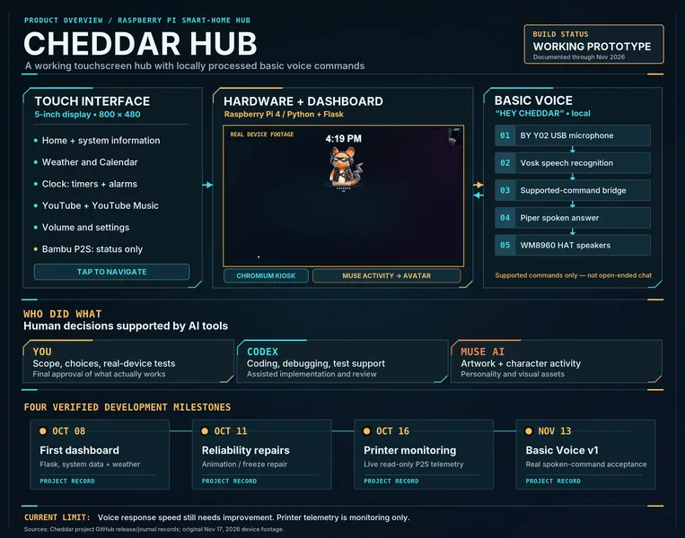
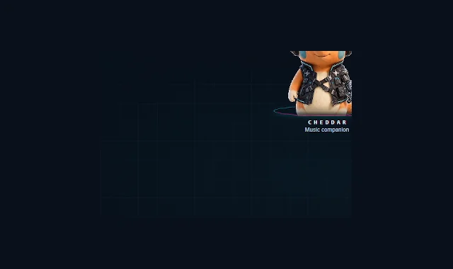
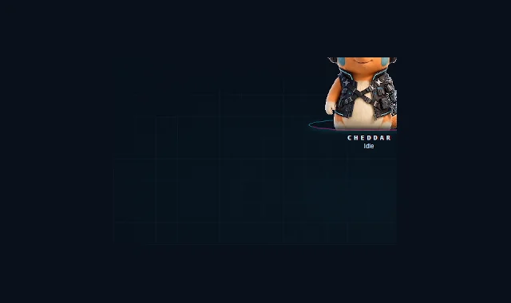

PART 01 · VISUALIZE IT
Cyberpunk Infographic
A fast architecture and project story overview with real Cheddar visuals.
Modules 3 + 4 · graduate project handoff
A single place to explore Cheddar Hub: its Raspberry Pi touchscreen dashboard, supported voice workflow, original screenshots, test evidence and the lessons from building it.
Browse the submission ↓
Start with the work
Every card opens the actual attached file with a relative link. Keep the folder together for offline use.
PART 01 · VISUALIZE IT
A fast architecture and project story overview with real Cheddar visuals.
PART 02 · INTERACTIVE OVERVIEW
Standalone HTML for interaction modes, features, limitations and owner checks.

PART 03 · DOCUMENT IT
A nine-page quick start using authentic screens matched to the tasks.

PART 04 · TELL THE STORY IN MOTION
Captioned MP4 using the approved footage and original narration.
PART 05 · PROVE IT
Physical test history, before/after comparisons, failures, and direct evidence.
The supporting record
The screenshots are real footage-derived images. A screenshot of a voice demo is visual context; the original-audio clip is the audio evidence.
Limits matter. The touchscreen and voice tests are historical owner-operated checks, not newly repeated by this document. There is no controlled speed-improvement claim, no fresh full Pi cold-boot test, and no claim of unrestricted voice AI.
For the reviewer
Offline-friendly: open this index.html from the downloaded project-handoff folder. The interactive overview, infographic, PDFs, audio/video, evidence and reflection are linked with portable relative paths.
Privacy: the source development GitHub repository may be private and is supplemental. The local deliverables are bundled. Please review recordings and screenshots for acceptable public release before uploading.
Verification: local checks and access status · file hashes · GitHub-friendly file index